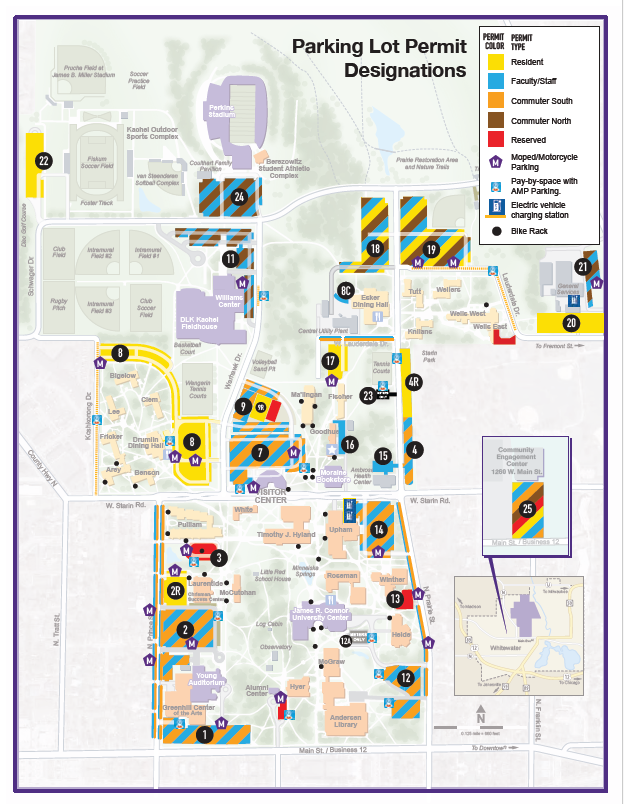

Temporary kiosk permits
Rates
- 1 hour: $1.65
- 2 hours: $3.05
- 3 hours: $4.45
- Day permit: $5.00
- Overnight permit: $8.00
UW-Whitewater
Plan where to park before you arrive with destination-based lot recommendations, clickable map hotspots, and official visitor parking guidance built around campus.
Temporary kiosk permits
When permits apply
Permits are required at all times except University-recognized holidays and weekends from Friday 5 PM through Sunday 11 PM.
Important rule
Kiosk overnight parking between 2 AM and 5 AM must be in Lot 19. Online visitor permits do not include overnight parking.
Destination planner
Pick a campus destination to see the best visitor parking options before you arrive.
Lot finder
Search manually or use the destination planner to focus the list on the most useful visitor lots.
Interactive map
Click the numbered hotspots to jump straight to a parking area. AMP-only lots use a separate color, and recommended lots glow gold when a destination is selected.

AMP pay-by-space
AMP spaces exist in Lots 1, 2, 3, 4, 7, 8, 11, 12, 12A, 14, and 23, plus Hyer, Koshkonong Drive, and Lauderdale Drive.
How time limits work
Most AMP areas allow up to 2 hours. Lots 11 and 23 allow up to 4 hours. After the limit, that zone locks for 24 hours.
Important permit rule
A parking permit does not waive AMP fees. If a stall is marked for AMP pay-by-space, payment is still required.